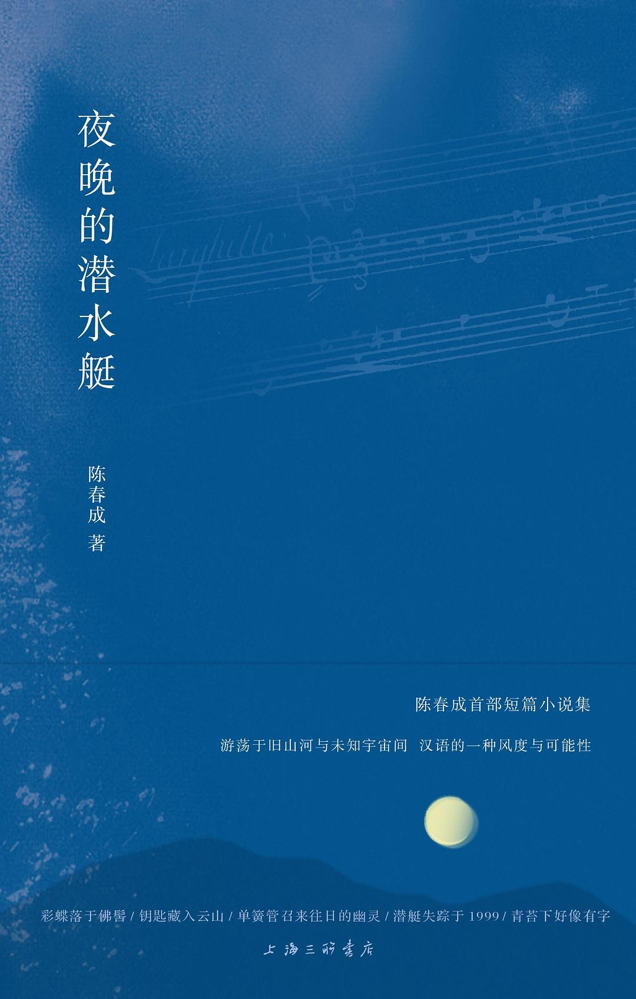

夜晚的潜水艇

总体观点
《夜晚的潜水艇》是近年来华语纯文学界横空出世的罕见奇迹之作。九零后青年作家陈春成在闽南群山与古寺竹林之间，以近乎宋明笔记散文般澄澈古雅的现代汉语笔调，打磨出九篇既具博尔赫斯式迷宫幻境、又具中国六朝志怪风骨的精妙短篇，全票夺得首届宝珀理想国文学奖首奖。
作品探讨了人类想象力如何在平庸琐碎的应试与现实体制规训下被一步步阉割、退化与最终告别。在同名成名作中，一个普通少年在被蓝光笼罩的卧室内，把书桌和双层床想象成潜入万米深渊的潜水艇，在深海与大王乌贼、发光水母漫游；而为了考取重点大学，他不得不亲手将潜水艇在脑海深处沉毁。陈春成以其绝世的文字炼金术，为所有在现实重压下丢失了童年秘密航道的人们，打捞起那艘永不沉没的心灵潜水艇。
核心观点
-
1. 童年想象力作为抵抗现实平庸规训的唯一秘密避难所
在狭窄闭塞的日常物理空间里，孩童纯粹的心智能够借助微弱的光影建立起包含整座海洋与星空的浩瀚宇宙王国。
少年在睡前把蓝色床单拉过头顶，床边的闹钟变成声呐探测仪，双层木床吱呀作响化作核潜艇的合金外壳下潜至马里亚纳海沟。 -
2. 应试体制对个体灵性与幻想能力的不可逆阉割
为了迎合世俗对考分、升学与稳定工作的单一评价标准，少年必须痛苦地在脑海中亲手拆除自己花费童年构筑的奇幻帝国。
为了准备高考，少年在模拟考失利后流着泪坐在书桌前，在脑海里按下自爆按钮，眼睁睁看着那艘陪伴自己十年的潜水艇沉入死寂海底。 -
3. 竹峰寺的隐匿哲学：把无价之物藏入时间的缝隙里
世间最珍贵的美好回忆与心爱之物，不应大张旗鼓地炫耀展示，而应像古僧藏碑一样，藏在无人知晓的幽暗石缝深处。
《竹峰寺》中青年回到即将被拆迁的老家，将陪伴自己长大的老钥匙悄悄塞进古寺石桥一块长满青苔的凹缝中，与岁月永恒融为一体。 -
4. 传彩笔式的艺术宿命：极致才华与永恒沉默的痛苦互换
如果获得写出惊天地泣鬼神绝世华章的文采，代价是写出的每一个字都无法向任何世人展示分享，艺术家该如何抉择？
老作家叶生在获得江淹神笔后写出了震古烁今的千古奇文，却只能在无人知晓的深夜焚毁手稿，享受极致孤独的艺术狂喜。 -
5. 古典中文语境在当代先锋科幻中的奇绝还魂
打破西方翻译腔的束缚，用典雅凝练、抑扬顿挫的传统文言白话笔调书写云彩修剪员、潜水艇与酿酒师，达成惊艳美学突破。
《裁云记》中描绘市政管理局云彩修剪员每日用激光剪刀在天幕上修剪积雨云，文字如清泉击石，既有科幻脑洞又具陶渊明式的闲适古意。
全书结构
-
第一篇 《夜晚的潜水艇》：蓝色卧室里的深海远航幻想
讲述博尔赫斯笔下幻象与现实的对决，一个少年如何建立起自己深海潜水艇又如何为了高考亲手将其沉没的哀伤挽歌。
多年后已成为平庸画匠的主人公在新闻里看到深海科考队拍到一只巨大抛物线潜艇残骸，在泪光中确认童年梦想真实存在过。 -
第二篇 《竹峰寺》：藏在佛寺古碑断石里的时光钥匙
青年在城市生活受挫回到故乡竹峰寺借住，探访寺中关于藏碑与修桥的古老掌故，在山林竹影间安顿漂泊身心。
细致描摹山中古寺晨钟暮鼓、竹林穿风的声响，青年在搬动石板的刹那顿悟：最好的藏匿不是消失，而是成为日常风景的一部分。 -
第三篇 《传彩笔》：获得江淹神笔后的绝世才华与永恒沉默
现代落魄文人偶遇梦中仙人重获南朝江淹五彩笔，能够写出超越李杜的绝世名篇，代价是文字只有自己能看见并必须自焚。
叶生在书房里整夜奋笔疾书，字字珠玑如龙蛇飞动，天明时将字纸投入火炉化作灰烬，眼中闪烁着洞察天机的庄严狂喜。 -
第四篇 《裁云记》：云彩修剪员在云雾深处的诗意职守
设置了一个未来市政局负责按照规章修剪天空中积雨云形状的奇幻机关，在公文化体制中探寻诗意个体的隐秘反抗。
修剪员在无聊的日常打卡中偷偷把天边的一团云彩修剪成了爱人睡颜的轮廓，任其顺风飘过整座城市的头顶。 -
第五篇 《李茵的湖》与《音乐家》：梦境与现实交织处的古典回响
呈现前苏联时代审查制度下一位天才作曲家在脑海中构筑无声交响乐，以及恋人在时光之湖畔的永恒驻留。
音乐家在冰冷的列宁格勒列车包厢里闭上双眼，在没有乐谱的虚空中指挥由落雪、松涛与眼泪构成的终极无声弥撒曲。